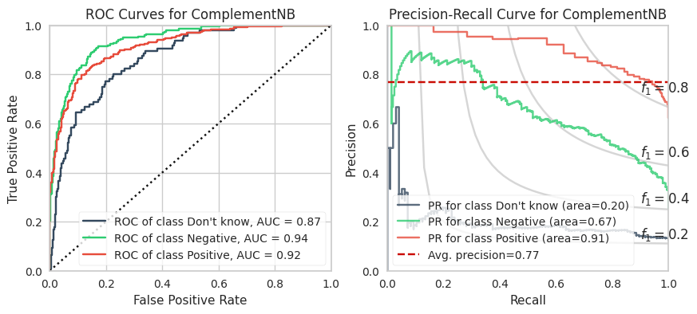
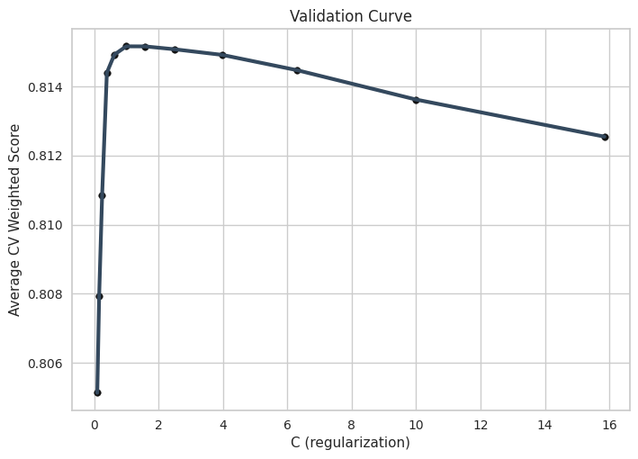
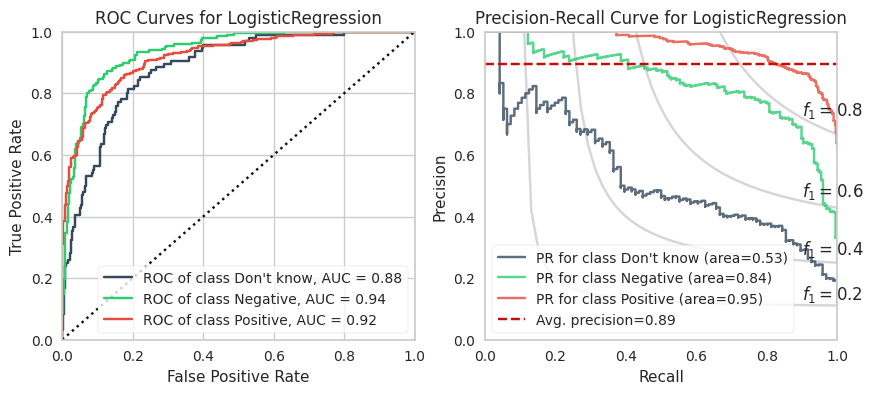
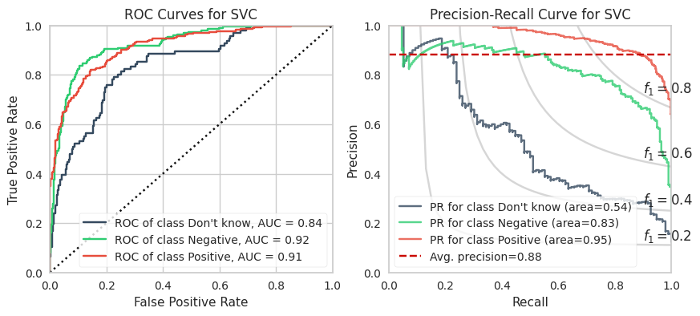

Here is a log-histogram of word frequency per review that I made in this post. The number of words per review cannot exceed a threshold since (a) the character limit per review is 520, and (b) the average characters per word is 4.79 (or 5.79 if you include a white space). This threshold is 520 / 5.79 ~ 90, which is approximately where the knee of the distribution is.
fig-words-output-1.png
From experiments, I found that filtering out reviews with more than 350 characters (roughly 60 average-length words) improved every model’s performance by a few percent. The price-sentiment takes relatively little estate in a review. So, sacrificing 1% of reviews is a small penalty for a 3% model improvement!
C:\Users\steph\AppData\Local\Temp\ipykernel_28044\1431066477.py:3: SettingWithCopyWarning:
A value is trying to be set on a copy of a slice from a DataFrame.
Try using .loc[row_indexer,col_indexer] = value instead
See the caveats in the documentation: https://pandas.pydata.org/pandas-docs/stable/user_guide/indexing.html#returning-a-view-versus-a-copy
df['reviews_clean'] = df['reviews'].apply(cleaned_text)
Here are some examples of the cleaned text.
Review
Pre-processed Review
Loved !!!! Pairs great with a 50$ steak lol or alone;)
Loved! Pairs great with a 50$ steak lol or alone
Super soft mouth feel.. fruit forward. Not sure it’s worth the $50.00 but could be my pallet..
Super soft mouth feel. fruit forward. Not sure it’s worth the $50.00 but could be my pallet.
Heavy cherries on the nose , followed by a blackberry taste and spicy velvety smooth finish! More of a light-medium Cabernet and for the money, under $20……wow!!! Good wine 🍷 anytime!
Heavy cherries on the nose, followed by a blackberry taste and spicy velvety smooth finish! More of a light-medium Cabernet and for the money, under $20. wow! Good wine anytime!
3.7 ~ 87% ($14.75) Frescobaldi 🇮🇹 Rèmole Rosso 2017 Med bodied, bruised, rustic purple ~ black berries, red cherries, and plums ~ smooth as always ~ spicy, oaky, and dry (4 gs/12.5% abv). I had the patience of a Buddhist monk, and let this one stew in my bat cave for THREE years! It didn’t really seem to help 😑
3.7 87% $14.75 Frescobaldi Rèmole Rosso 2017 Med bodied, bruised, rustic purple black berries, red cherries, and plums smooth as always spicy, oaky, and dry 4 gs/12.5% abv. I had the patience of a Buddhist monk, and let this one stew in my bat cave for THREE years! It didn’t really seem to help
5. Word significance: bag of words with TF-IDF vectorizer
Next, I define a TF-IDF vectorizer.
from sklearn.compose import ColumnTransformerfrom sklearn.feature_extraction.text import TfidfVectorizerimport spacynlp = spacy.load("en_core_web_sm")def tokenize_lemma(text): text = filter_only_characters(text)# Lemmatize, lowercase, strip each word tokenreturn [w.lemma_.lower().strip() for w in nlp(text)]TFIDFEncoder = TfidfVectorizer( ngram_range=(1, 2), # A list of stop words: common, wine nomenclature, dates stop_words=STOP_WORDS, tokenizer=tokenize_lemma, )
6. Sentence abstraction: transform reviews into sentence embeddings
Here is a (scikit-learn) transformer that creates embeddings using the sentence transformer.
Finally, I create a column transformer that plucks the data columns we want and applies various transformers to them. The outputs of each transformer are merged back together into a large (semi-)sparse matrix.
from sklearn.model_selection import train_test_splitseed =42splitFraction =0.85X_train, X_test, y_train, y_test = train_test_split(X, y_encoded, train_size=splitFraction, random_state=seed, stratify = y_encoded) # stratify tries to ensure the split has equal class proprotionsprint(f'Training set shape: {X_train.shape}')print(f'Testing set shape: {X_test.shape}')
Training set shape: (4387, 28436)
Testing set shape: (775, 28436)
10. Create weights for imbalanced data
A common solution to imbalanced data is to under- or oversample until the class frequencies are equal. Under-sampling throws out data and reduces the diversity in majority classes. Oversampling duplicates random samples from the minority classes and increases computation time when machine learning.
I prefer re-weighting the loss function by the class weights, which works for most models. Its effectively the same as oversampling without the computational expense and random sampling.
Another really interesting solution is to do sentence augmentation which is oversampling plus a rearrangement of the sentences. This is more applicable considering most sentences are disjoint from others in a short review. This is a work in progress that I will revisit! For now, I stick with class re-weighting.
Code
from sklearn.utils.class_weight import compute_sample_weight, compute_class_weightsample_weight_train = compute_sample_weight(class_weight ='balanced', y = y_train)class_name = np.unique(y_train)class_weight_train = compute_class_weight(class_weight ='balanced', classes=class_name, y = y_train)class_weight_train = class_weight_train/np.min(class_weight_train)class_weight_dict =dict(zip(class_name,class_weight_train))class_weight_dict
There are 5,500 samples of data with thousands of features. The data is imbalanced with a category distribution of 6/2/1. There are several machine learning algorithms that we can try.
Dummy Classifier (for comparison)
Logistic Regression
(Complement) Naive Bayes
SVMs (not advised due to large number of features, but we try)
Random Forests
XGBoost and LightGBM
Model Results
The training calculations are appended at the end of this post. Below are the ROC and PR curves for each model.
XGBoost and LightGBM models have the highest ROC AUCs which suggests these are the models to adopt. However, imbalanced datasets inherently have fewer “True Negatives” which limits the dynamic range of the false positive rate (x-axis of ROC). As a result, the ROC AUC is greater or more optimistic than we’d think for imbalanced datasets.
A more sensitive measure for minority classes is Precision (i.e., your predictive power). If we replace the False Positive Rate in the ROC curve with Precision and invert the X and Y axes, you get the PR curve.
We can see that the PR AUC is poor for CNB (which is disappointing because it is extremely fast to compute). The DKs are marginally better than random chance.
The PR AUCs suggests the XGBoost model is better performing than the LightGBM model by a little bit. (To be fair, I did not explore many LGBMs because it is slower to compute for smaller datasets and they perform relatively equally well.)
Here are the AUC results from all our models.
Model Name
ROC AUC
PR AUC
Don’t know
Negative
Positive
Don’t know
Negative
Positive
LogReg
0.883
0.938
0.919
0.536
0.837
0.951
C. Naive Bayes
0.868
0.937
0.916
0.470
0.850
0.948
SVC
0.839
0.922
0.914
0.489
0.817
0.948
RFC
0.900
0.937
0.923
0.581
0.836
0.953
XGBoost
0.900
0.937
0.923
0.581
0.836
0.953
LightGBM
0.900
0.938
0.923
0.575
0.839
0.953
Here are 20 words that the XGBoost classifier found to have the highest significance. In another post, I’ll go deeper into which words are the most significant per category.
Top 20 Most Significant Words (XGBoost)
Score
Word
Score
Word
3.61
not
1.59
well than
3.24
value
1.58
decent
2.73
great
1.46
not worth
2.48
but
1.46
not bad
2.45
delicious
1.44
good but
2.25
bad
1.33
not great
1.67
good
1.33
overprice
1.62
bitter
1.33
pricey
1.62
good value
1.28
region
1.59
worth
1.26
yes
Here are the ROC and PR curves for each model. The code to fit these models are further below.
1. Logistic Regression
2. Complement Naive Bayes

3. Support Vector Machine
4. Random Forest Classifier
5. XGBoost (Winner!)
6. LightGBM
Model Training Code
A. Dummy Classifier
The dummy classifier ignores input features. “Stratified” predicts based on the occurrence frequency of classes from the training set. Our custom weighted score is also shown. This is our baseline.
from sklearn.pipeline import Pipelinefrom sklearn.model_selection import GridSearchCVfrom sklearn.linear_model import LogisticRegressionmodelName ="LogisticRegression"pipe = Pipeline([ (modelName, LogisticRegression(max_iter=10000, random_state=42)), ])param_grid = {"C": 10**np.arange(-1, 1+0.25, 0.2)}param_grid = {f"{modelName}__{k}": param_grid[k] for k in param_grid.keys()}model = GridSearchCV(pipe, param_grid = param_grid, cv =5, n_jobs=10, scoring = sentimentScorer, )kwargs_fit = {modelName+'__sample_weight':sample_weight_train}model.fit(X_train, y_train, **kwargs_fit) print("The best hyperparameter value is: ")for k,v in model.best_params_.items():print(f"{k}: {v}")fname = fdir_model +f'{modelName}.dill'dill.dump(model, open(fname, 'wb'))
The best hyperparameter value is:
LogisticRegression__C: 0.9999999999999994


Highest polarity words: Logistic Regression
Polarity
Positive Words
Polarity
Negative Words
2.85
good abv
-4.18
not bargain
2.56
great absolute
-4.16
decent absolute
1.94
good valueprice
-3.82
bad acidic
1.68
value able
-3.44
not able
1.35
excellent approachable
-2.79
ok atar
1.32
pretty great
-1.75
decent well
1.32
nice above
-1.72
bad purchase
1.32
great versatile
-1.66
not ws
1.28
worth average
-1.63
like grab
1.22
pretty acidic
-1.58
not worthy
C. Complement Naive Bayes
Complement Naive Bayes is apparently the corrected version of MNB when there is imbalanced data.
Note: this is an extremely fast algorithm!
Code
from sklearn.pipeline import Pipelinefrom sklearn.model_selection import GridSearchCVfrom sklearn.naive_bayes import ComplementNBmodelName ="ComplementNB"pipe = Pipeline([ (modelName, ComplementNB()), ])param_grid = {"alpha": 10**np.arange(-1,1, 0.01)}param_grid = {f"{modelName}__{k}": param_grid[k] for k in param_grid.keys()}model = GridSearchCV(pipe, param_grid = param_grid, cv =10, n_jobs=10, scoring = sentimentScorer, return_train_score =True, )kwargs_fit = {modelName+'__sample_weight':sample_weight_train}model.fit(X_train, y_train, **kwargs_fit) print("The best hyperparameters: ")for k,v in model.best_params_.items():print(f"{k}: {v}")fname = fdir_model +f'{modelName}.dill'dill.dump(model, open(fname, 'wb'))
The best hyperparameters:
ComplementNB__alpha: 4.7863009232264
Highest polarity words
Polarity
Positive Words
Polarity
Negative Words
1.68
great versatile
-1.98
not worthy
1.44
good valueprice
-1.94
bad acidic
1.2
value able
-1.93
not bargain
1.16
great absolute
-1.41
ok atar
0.95
great pricepoint
-1.04
would ok
0.89
steal but
-0.98
decent absolute
0.86
excellent vfm
-0.9
overprice artificially
0.86
excellent approachable
-0.88
not able
0.75
beat beat
-0.88
not cad
0.74
would challenge
-0.86
not grab
D. Support Vector Machine
SVM attempts to draw boundaries between classes of points using hypersurfaces. Each surface has a margin or “thickness” where points inside the margin become ‘support vectors’ which, in fact, define the hyper surface.
The amount of “slack” given to a proposed hypersurface is defined by points located on the wrong side of the hypersurface. The total slack is quantified by the sum of distance (or whatever penalty you define) between these points to the surface. A regularization parameter is used to control the strength of a penalty applied from slack. This is defined as C in the following code.
The hypersurface is a hyperplane (i.e., linear) by default. A kernel trick is used to allow malleable surfaces. I will explore a number of kernels which have their own hyperparameters (e.g., dimension of polynomial).
Note: The assumption that the data can be split using a hyperplane is quite strong considering the sparsity of the data and extremely high number of features. SVMs are quite expensive for high numbers of features much like KNNs since the algorithm requires an interpolation of subsets of points (a generally slow process).
Code
from sklearn.pipeline import Pipelinefrom sklearn.model_selection import GridSearchCVfrom sklearn.svm import SVCimport numpy as npdef linear(X, Y):return np.dot(X, Y.T) modelName ="SVC"pipe = Pipeline([ (modelName, SVC(class_weight='balanced', cache_size=2000, random_state=42)), ])C_param =10**np.arange(0, 2+0.5, 0.25)param_grid = [ {'kernel': [linear], 'C': C_param}, # This is much faster than default linear {'kernel': ['poly'], 'degree': [2,3], 'C': C_param}, {'kernel': ['rbf'], 'C': C_param},]param_grid = [ {f"{modelName}__{k}": grid[k] for k in grid.keys()} for grid in param_grid]model = GridSearchCV(pipe, param_grid = param_grid, cv =5, #Reduced for time n_jobs=8, scoring = sentimentScorer, )model.fit(X_train, y_train) print("The best hyperparameters: ")for k,v in model.best_params_.items():print(f"{k}: {v}")fname = fdir_model +f'{modelName}.dill'dill.dump(model, open(fname, 'wb'))
The best hyperparameters:
SVC__C: 56.23413251903491
SVC__kernel: rbf

E. Random Forest
There are many parameters in a decision tree and many more when aggregating over a forest of decision trees. Here are all of the relevant parameters we can change (source):
Note: Grid search was not extensive due to speed! Skipped to LGBM and XGBoost.
Parameter
Value
n_estimators
The number of trees in the forest.
max_depth
The maximum depth of tree from the root.
min_samples_split
Minimum number of samples required for a split to be considered.
min_samples_leaf
Minimum number of samples required for each leaf.
max_features
The number of features to consider when choosing a split for an internal node.
bootstrap
Whether bootstrap samples are used when building trees.
oob_score
Whether to use out-of-bag samples to estimate the generalization accuracy.
n_jobs
The number of jobs to run in parallel for both fit and predict. If -1, then the number of jobs is set to the number of cores.Criterion for splitting quality: Gini, Entropy, or Log Loss